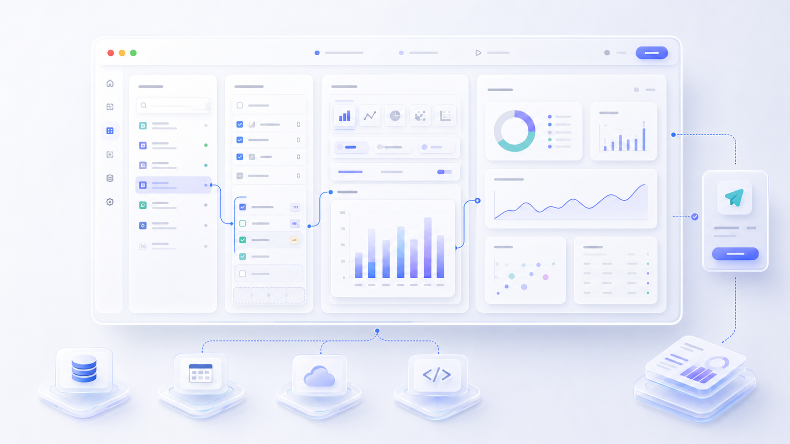
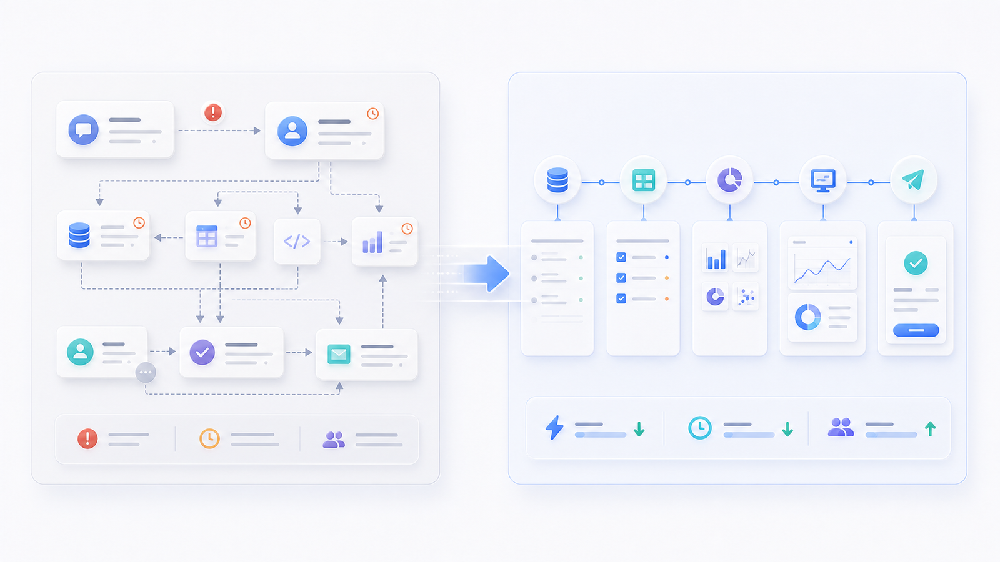
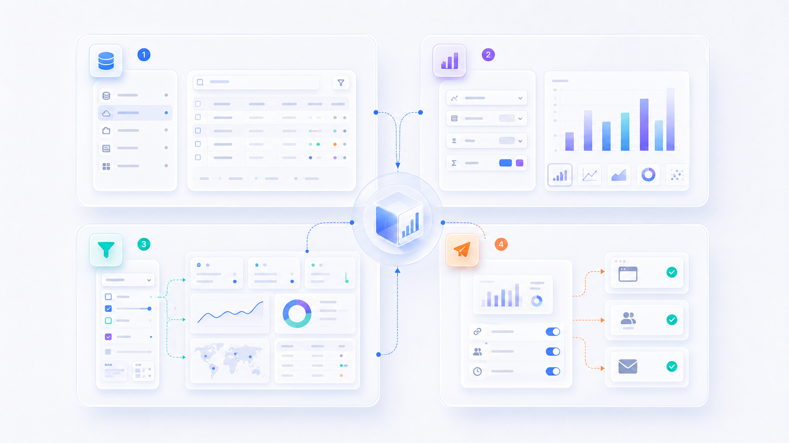
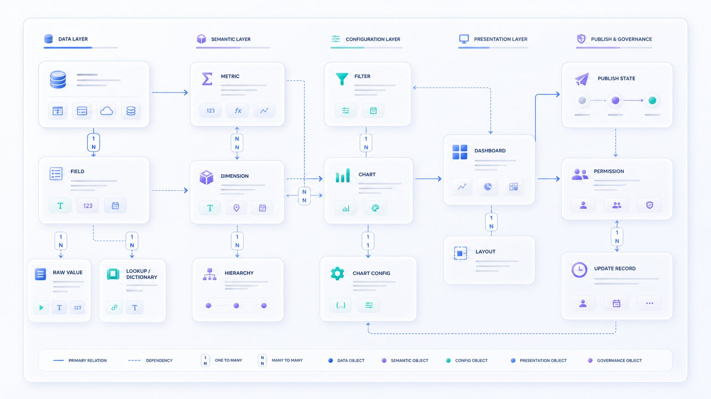
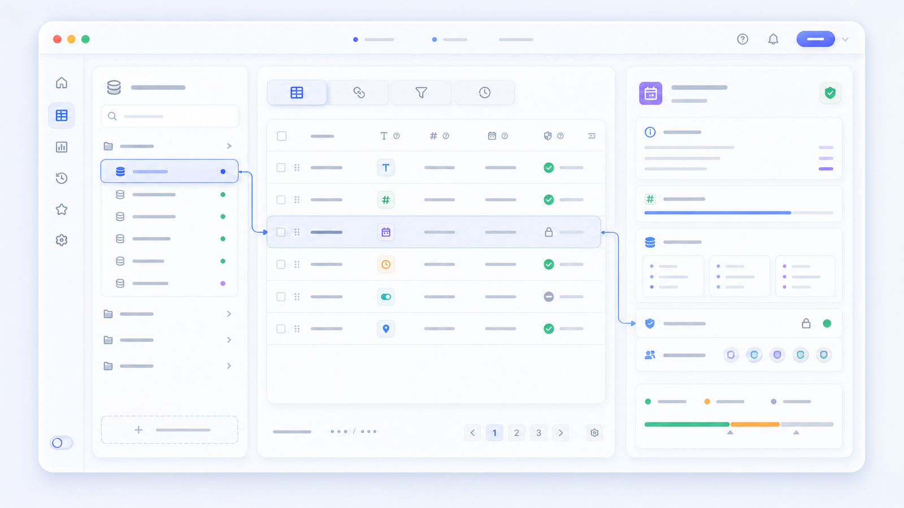
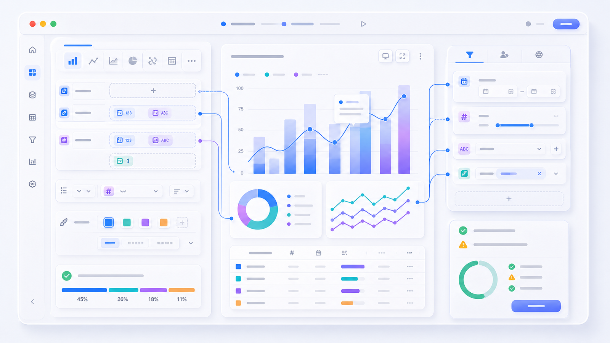
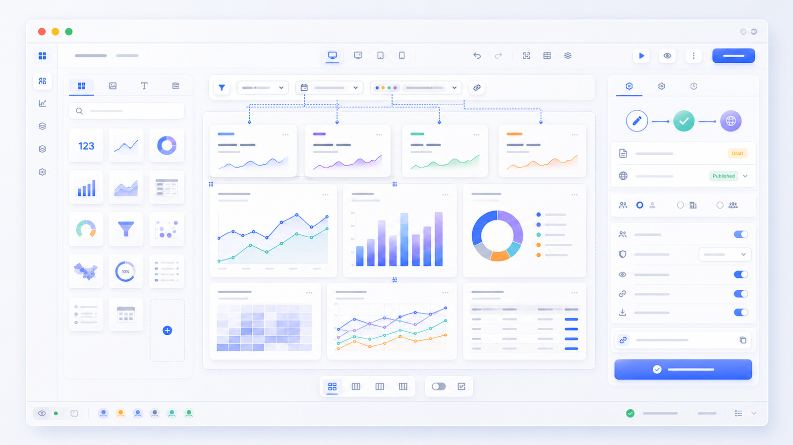
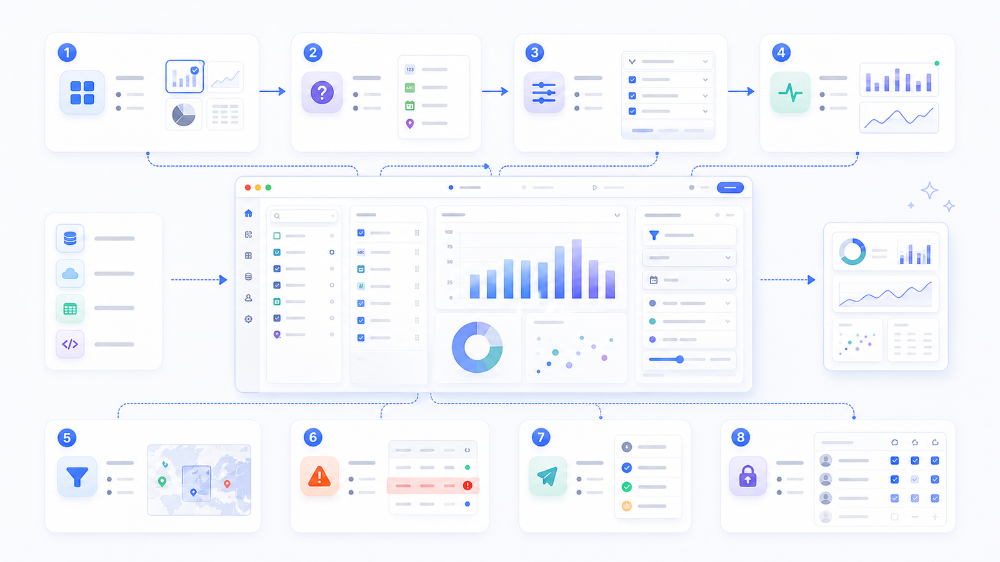
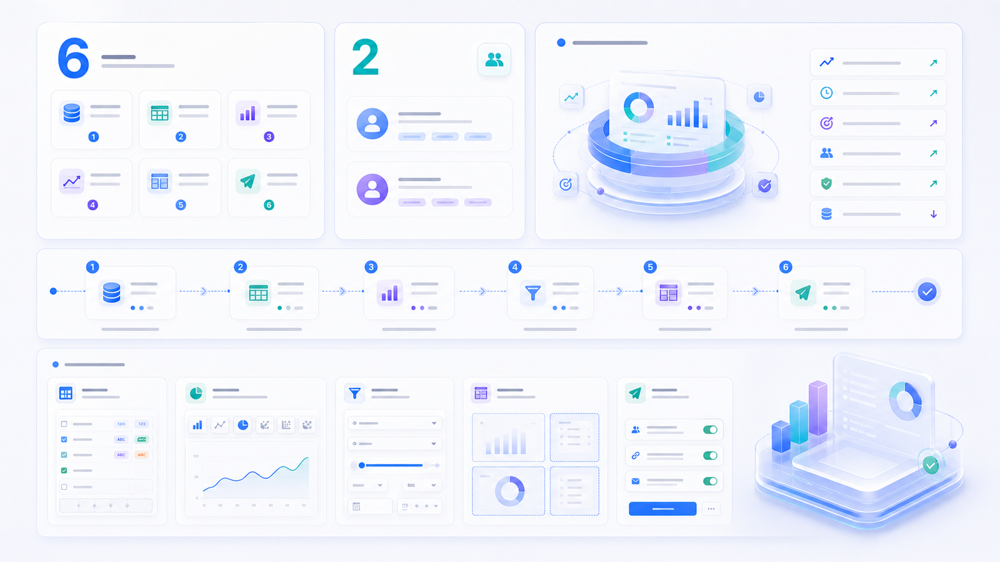

业务用户
快速找到可用数据，完成基础报表、指标分析和经营看板搭建，并通过筛选条件验证业务问题。
自助分析工具
面向业务用户与数据分析人员的自助分析工具，支持用户基于平台内的数据资产完成数据选择、字段配置、图表生成、筛选分析、看板编排与发布管理。
项目目标是降低报表制作和数据分析门槛，让业务用户不依赖研发或专业数据人员，也能快速完成从数据选择到结果呈现的完整链路。

01 项目背景
在云内部业务场景中，很多业务团队需要频繁查看指标、制作报表、搭建看板和分析数据变化。但传统分析流程通常依赖专业数据人员或研发支持，业务用户很难独立完成完整的数据分析任务。
自助分析工具要解决的不是“生成图表”这一单点问题，而是让用户知道有哪些数据可用、字段代表什么、是否有权限使用、如何配置指标和维度、如何组织看板，以及分析结果如何被保存、发布和复用。
核心问题：如何让业务用户用更低成本完成数据选择、图表配置、看板搭建和结果发布？

02 用户角色与关键任务
快速找到可用数据，完成基础报表、指标分析和经营看板搭建，并通过筛选条件验证业务问题。
更灵活地配置字段、指标、维度、图表类型和筛选条件，沉淀标准分析模板，减少重复支持成本。
通过稳定的看板和报表获得清晰判断，关注关键指标变化、异常趋势和团队可复用的数据入口。
从数据选择、字段配置、图表生成、筛选分析、看板编排到发布管理，形成完整任务闭环。

03 设计挑战
自助分析的难点不在于把所有配置项展示出来，而在于让不同角色用合适的复杂度完成任务：业务用户需要默认路径和清晰反馈，分析人员需要灵活配置，管理者需要可信、可复用的结果。
04 信息架构设计
Self-Service Analytics Tool 的信息架构不是单纯“画图表”，而是从数据选择到分析结果发布的完整链路。用户需要先找到可信数据，再理解字段和口径，随后配置指标、维度、图表和筛选条件，最后将结果组织为可阅读、可复用的看板。
对象模型：Data Source + Field + Metric + Dimension + Chart + Filter + Dashboard + Publish

05 核心方案 1｜数据源与字段选择

数据选择是自助分析的起点。页面需要同时呈现数据源分类、字段类型、字段说明、字段示例、可用状态和权限状态，帮助用户判断数据是否适合当前问题。
通过指标口径、维度说明、字段可用性和示例值，让业务用户在生成图表前先理解字段含义，减少因选错字段导致的配置失败。
06 核心方案 2｜图表配置与筛选联动
图表配置是用户从数据进入可视化结果的关键步骤。配置面板需要让用户知道字段放在哪里、图表为什么这样变化、配置是否有效，并通过实时预览减少盲目试错。
筛选器决定用户如何进一步分析数据。全局筛选器、组件筛选器、时间范围、条件过滤、筛选联动和结果反馈需要保持可解释，避免因筛选范围不清造成分析误解。


07 核心方案 3｜看板编排与发布管理
看板编排用于将多个图表组合成可阅读、可复用的分析页面，并保持布局、筛选和发布状态清晰。发布管理则让分析结果从个人草稿进入团队消费场景。
08 关键设计决策
关键决策是把自助分析拆成稳定路径，而不是把所有专业能力平铺给用户。常见任务用默认配置快速生成结果，高级配置则在需要时展开，避免普通用户被复杂度打断。


09 项目价值与成果
对用户，产品降低了报表制作和看板搭建门槛，减少对研发或专业数据人员的依赖；对业务，提升了数据资产的使用效率，支撑业务分析、指标监控和经营看板场景；对平台，沉淀了字段配置、图表配置、筛选器、看板布局和发布管理等通用设计模式。